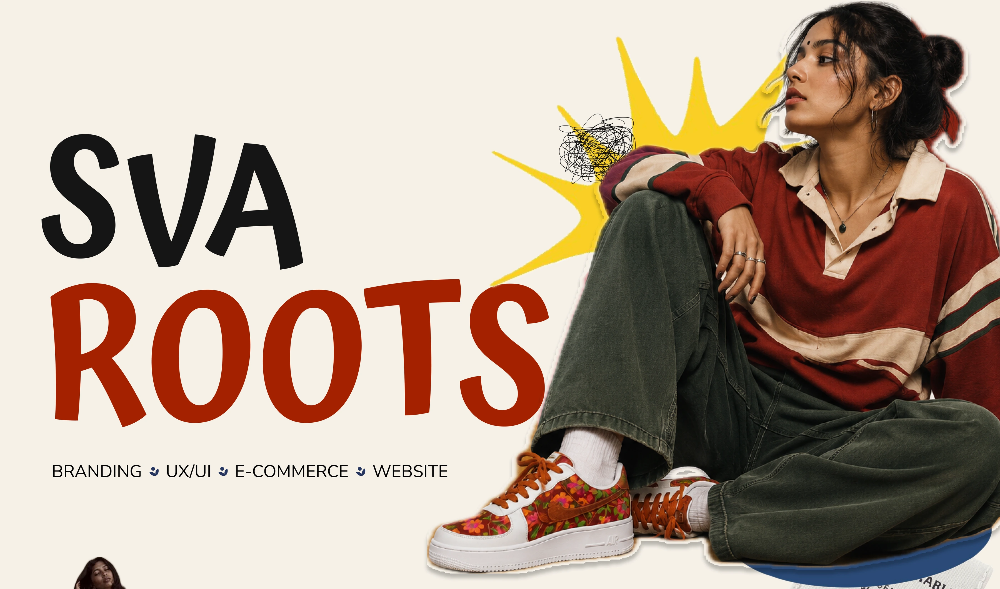
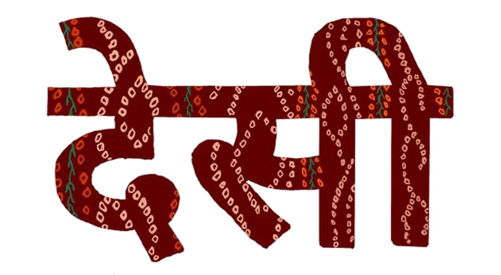
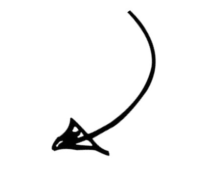
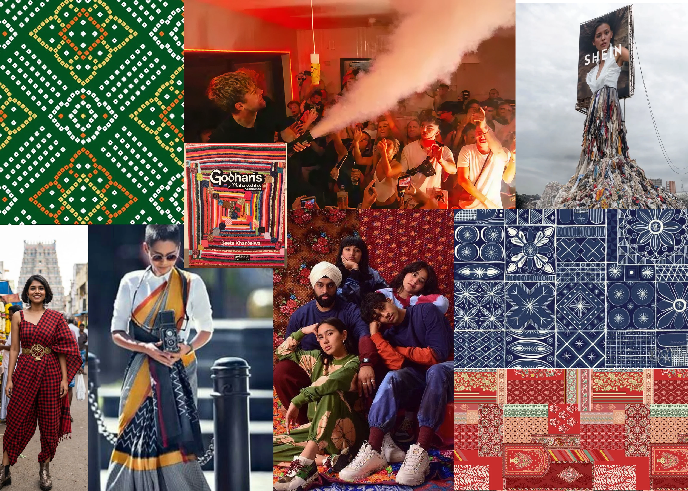
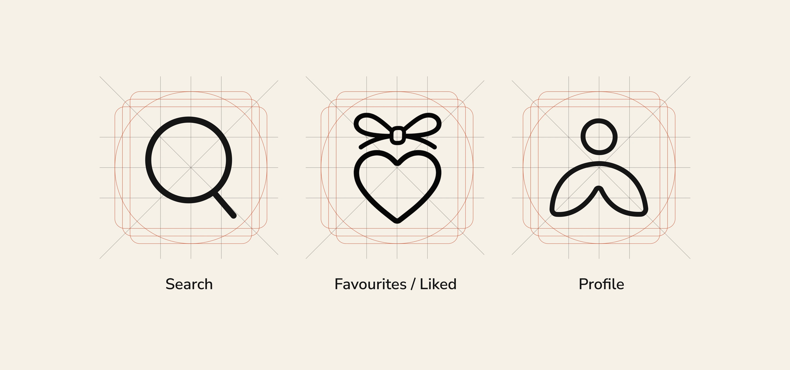
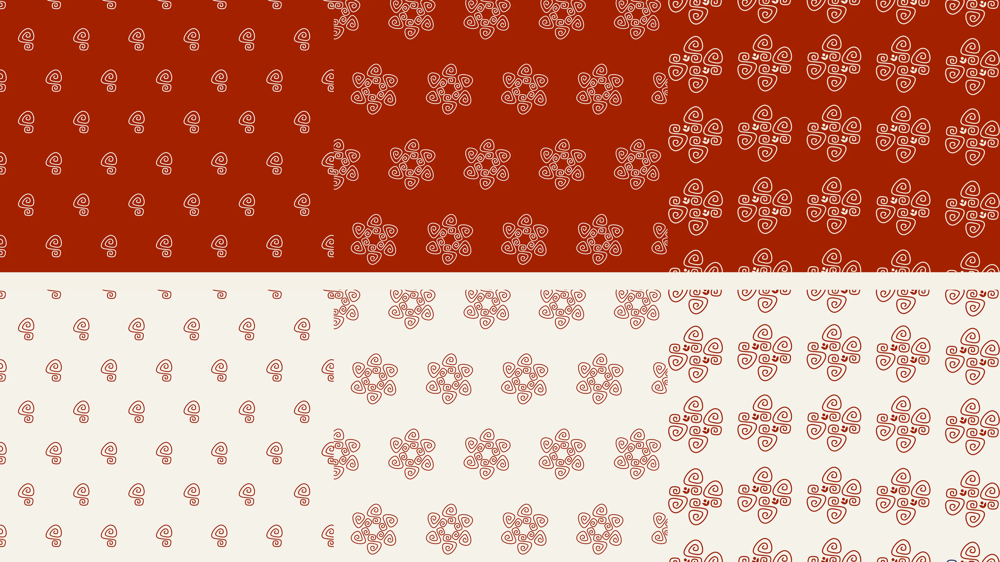

SVAROOTS
Timeline
The problem
Gen Z in India is mixing Indian textiles into everyday streetwear, but mainstream sneakers all look alike. Customisation exists, but it’s permanent: once you design a pair, it’s done. Changing your style means buying more shoes, and that means more waste.
What I did
Market research & Brand Strategy · Competitor mapping · Brand identity & logo · Product concept · App UI (in progress)



The Rise of

Contemporary Streetwear
“Social media accelerated the popularity of Indo-western styling among Gen Z.”
Our Outfits Evolved.
Our Sneakers Didn’t.

“Nike, Adidas, Converse, Puma. Different brands. Same visual language.”
But what if our shoes could evolve with us?
If personal style changes with our moods and identities, could our footwear change with it too? We explored how existing sneaker brands approach customisation and modularity, and what their approaches make possible.

Competitive
Landscape

We mapped key players to understand how brands approach customisation, culture, community and modularity.

What our competitor map told us:
SEYES · Modular footwear
Interchangeable shoe components showed one approach to modularity.
Banjaaran Studio · Cultural storytelling
Footwear can communicate heritage and identity.
Gully Labs · Contemporary Indian identity
Local cultural references can inform contemporary sneaker design.
IKEA · Adjacent inspiration
The experience of building something can foster a sense of ownership.
We saw an opportunity to let people change their sneakers as often as they change their style, using reversible designs inspired by Indian textiles.
So we asked...

How might we design
sneakers that evolve
with the wearer?

Meet

SVAROOTS
Modular sneakers with interchangeable handcrafted textile
patches that evolve with your style.

Build Your Pair
Choose from 4 interchangeable side patches, 3 toe patches and 3 lace designs of Kashmir

Choose → Customize → Evolve
Browse regional textile collections or create your own
combination using our 3D Customization Lab
OR.....
Explore Regional
Collections

Each collection celebrates the textiles and craft
traditions of a different Indian state!
But why target Gen Z?
India's Gen Z represents a significant audience for Svaroots to explore, creating an opportunity to bring personal expression and Indian textile influences into everyday footwear.


How it Works

Rooted in
Culture.
Designed for
Change.
The base sneaker and patch packs make that ongoing change part of the business model: keep the pair, add a new look.
Business Model
 BASE SNEAKER -
BASE SNEAKER -₹3,999+“razor”
PATCH PACK -₹999/3 PATCHES“blade”
3 Revenue Streams
Direct-to-Customer Sales“Layer 1”
Monthly patchdrop boxes“Layer 2”
Workshops,Gifting, Collabs“Layer 3”
Go-To-Market
Digital Only“Phase 1: Build the cult”Pop-ups + Campus +Community“Phase 2: Expand touchpoints”

More Than
a Shoe
From product to identity
Branding &
Visual Identity
Finding the name
Before Svaroots, we explored what the name needed to express.


SVA
From Svaroop, meaning one's true form and essence.
ROOTS
Your Indian heritage and personal beliefs.
Developing the symbol
Sketches, individual explorations and digital refinements.


The final identity
One mark, many expressions

The logo system

The visual world
Indian textiles and craft meet contemporary streetwear and self-expression.

- Heritage
- Craft
- Individuality
- Community
- Evolution

Typography with character
Svaroots
Created to Create

Expressing the brand
Illustration style
Photography layered with expressive graphic elements.

Photography style
Product detail, texture and low-angle moments of real-world wear.

Product placement
Keep the sneaker and its craftsmanship visible, even in expressive settings.

From brand to interface
The same visual language extends into the app.

Patterns from the mark
The symbol becomes a repeatable graphic in red and white.

Made tangible
Business card

Shoe box

The shoe keeps changing — so the app has to let you change it...
The
Svaroots
App
Mobile app · Information architecture, flows, wireframes, UI & design system · solo
Svaroots isn’t just a store. You can shop ready-made combos, design your own sneaker or patch, and borrow ideas from other Svarooters — so the app is built around three connected spaces, not three separate ones.
Mapping it out · IA version 3
One app, three connected spaces
First, what 7 competitor apps taught me...
Nike · adidas · PUMA · Bata · RapidBox · ALDO · ASICS + customisation flows explored in MoonPrint
| Pattern I saw | What it became in Svaroots |
|---|---|
| Multiple entry points into shopping | Shop by State — an alternate route into the same catalogue, with that state’s textile filter already applied |
| Discovery lives inside shopping | No Home tab — What is Svaroots?, Drops and Membership are modules inside Shop |
| Membership surfaced while shopping | Membership appears in context in Shop, and is managed in My Svaroots |
| Utilities aren’t destinations | Search, Bag and My Svaroots are global utilities — not tabs |
| Customisation should end in a purchase | Create is a primary destination: Discover → Create → Purchase |
| Inspiration can feed the product loop | Community designs can be saved, recreated in Create, or bought as-is |
* Nike By You and the full Customuse flow weren’t accessible, so they’re only conceptual references — not app research.
...then I structured it
ShopCreateCommunity
SearchBagMy Svaroots
Orange lines = only the cross-connections that matter; Shop → Create, Community ⇄ Create, Shop by State → All Products, Membership → registration. Not every possible action.
Three calls worth explaining
One destination, many doors
Build Your Own Combo is a single destination with multiple entry points — never duplicated in the IA.
My Designs vs Favourites
My Designs = things I created. Favourites = things I saved for later.
Public vs private
My Community Profile is your creator identity; My Account is private purchase management.
Kept deliberately high-level; PLP, PDP, filter, sort and purchase controls belong in flows and UI. Notifications aren’t a destination; product tutorials live under Help & Support.
Four journeys through the connected IA
Key user flows
The flows show how the three spaces work together: Shop and Community lead into Create, while Shop by State reaches the same catalogue.
Flow 1 · Build Your Own Combo from Shop
Shop → What is Svaroots? → Build Your Own Combo → Customise in Create → Add to Bag
Flow 2 · Recreate a community design
Community → Popular Designs → Edit / Recreate → Create — config loaded → Share or Add to Bag
Flow 3 · Shop by State
Shop → Shop by State → Maharashtra → All Products — filter applied → Add to Bag
Flow 4 · Build Your Own Patch
Create → Build Your Own Patch → Upload motif → Choose colours → Create patch